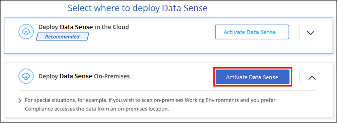

Request doc changes
Request doc changes Edit this page
Edit this page Learn how to contribute
Learn how to contributeDeploy Cloud Data Sense on a Linux host that has internet access
Contributors
Complete a few steps to deploy Cloud Data Sense on a Linux host in your network, or in the cloud, that has internet access.
The on-prem installation may be a good option if you prefer to scan on-premises ONTAP systems using a Data Sense instance that’s also located on premises — but this is not a requirement. The software functions exactly the same way regardless of which installation method you choose.
Note that you can also deploy Data Sense in an on-premises site that doesn’t have internet access for completely secure sites.
Quick start
Get started quickly by following these steps, or scroll down to the remaining sections for full details.
 Create a Connector
Create a ConnectorIf you don’t already have a Connector, create a Connector now. See creating a Connector in AWS, creating a Connector in Azure, or creating a Connector in GCP.
You can also deploy the Connector on-premises on a Linux host in your network or in the cloud.
 Review prerequisites
Review prerequisitesEnsure that your environment can meet the prerequisites. This includes outbound internet access for the instance, connectivity between the Connector and Cloud Data Sense over port 443, and more. See the complete list.
You also need a Linux system that meets the following requirements.
 Deploy Cloud Data Sense
Deploy Cloud Data SenseDownload the Cloud Data Sense software from the NetApp Support Site and copy the installer file to the Linux host you plan to use. Then launch the installation wizard and follow the prompts to deploy the Data Sense instance.
 Subscribe to the Cloud Data Sense service
Subscribe to the Cloud Data Sense serviceThe first 1 TB of data that Cloud Data Sense scans in Cloud Manager is free. A subscription to your cloud provider Marketplace, or a BYOL license from NetApp, is required to continue scanning data after that point.
Create a Connector
If you don’t already have a Connector, create a Connector in your cloud provider. See creating a Connector in AWS or creating a Connector in Azure, or creating a Connector in GCP. In most cases you will probably have a Connector set up before you attempt to activate Cloud Data Sense because most Cloud Manager features require a Connector, but there are cases where you’ll you need to set one up now.
There are some scenarios where you have to use a Connector that’s deployed in a specific cloud provider:
-
When scanning data in Cloud Volumes ONTAP in AWS, Amazon FSx for ONTAP, or in AWS S3 buckets, you use a connector in AWS.
-
When scanning data in Cloud Volumes ONTAP in Azure or in Azure NetApp Files, you use a connector in Azure.
-
For Azure NetApp Files, it must be deployed in the same region as the volumes you wish to scan.
-
-
When scanning data in Cloud Volumes ONTAP in GCP, you use a connector in GCP.
On-prem ONTAP systems, non-NetApp file shares, generic S3 Object storage, databases, OneDrive folders, SharePoint accounts, and Google Drive accounts can be scanned using any of these cloud Connectors.
Note that you can also deploy the Connector on-premises on a Linux host in your network or in the cloud. Some users planning to install Data Sense on-prem may also choose to install the Connector on-prem.
As you can see, there may be some situations where you need to use multiple Connectors.
Prepare the Linux host system
Data Sense software must run on a host that meets specific operating system requirements, RAM requirements, software requirements, and so on. Data Sense is not supported on a host that is shared with other applications - the host must be a dedicated host.
-
Operating system: Red Hat Enterprise Linux or CentOS version 8.0, 8.1, or 8.4
-
Version 7.8 or 7.9 can be used, but the Linux kernel version must be 4.14 or greater
-
The OS must be capable of installing the docker engine (for example, disable the firewalld service if needed)
-
-
Disk: SSD with 500 GiB available on /, or
-
100 GiB available on /opt
-
400 GiB available on /var
-
5 GiB on /tmp
-
-
RAM: 64 GB (swap memory must be disabled on the host)
-
CPU: 16 cores
Note that you can deploy Data Sense on a system with fewer CPUs and less RAM, but there are limitations when using these systems. See Using a smaller instance type for details.
-
A Red Hat Enterprise Linux system must be registered with Red Hat Subscription Management. If it’s not registered, the system can’t access repositories to update required 3rd party software during installation.
-
The following software must be installed on the host. If it doesn’t already exist on the host, then the installer will install the software for you:
-
Docker Engine version 19 or later. View installation instructions.
-
Python 3 version 3.6 or later. View installation instructions.
-
Verify Cloud Manager and Data Sense prerequisites
Review the following prerequisites to make sure that you have a supported configuration before you deploy Cloud Data Sense on a Linux system.
- Enable outbound internet access from Cloud Data Sense
-
Cloud Data Sense requires outbound internet access. If your virtual or physical network uses a proxy server for internet access, ensure that the Data Sense instance has outbound internet access to contact the following endpoints.
Endpoints Purpose https://cloudmanager.cloud.netapp.com
Communication with the Cloud Manager service, which includes NetApp accounts.
https://netapp-cloud-account.auth0.com
https://auth0.comCommunication with NetApp Cloud Central for centralized user authentication.
https://support.compliance.cloudmanager.cloud.netapp.com/
https://hub.docker.com
https://auth.docker.io
https://registry-1.docker.io
https://index.docker.io/
https://dseasb33srnrn.cloudfront.net/
https://production.cloudflare.docker.com/Provides access to software images, manifests, templates, and to send logs and metrics.
https://support.compliance.cloudmanager.cloud.netapp.com/
Enables NetApp to stream data from audit records.
https://github.com/docker
https://download.docker.com
http://mirror.centos.org
http://mirrorlist.centos.org
http://mirror.centos.org/centos/7/extras/x86_64/Packages/container-selinux-2.107-3.el7.noarch.rpmProvides prerequisite packages for installation.
- Ensure that Cloud Manager has the required permissions
-
Ensure that Cloud Manager has permissions to deploy resources and create security groups for the Cloud Data Sense instance. You can find the latest Cloud Manager permissions in the policies provided by NetApp.
- Ensure that the Cloud Manager Connector can access Cloud Data Sense
-
Ensure connectivity between the Connector and the Cloud Data Sense instance. The security group for the Connector must allow inbound and outbound traffic over port 443 to and from the Data Sense instance.
This connection enables deployment of the Data Sense instance and enables you to view information in the Compliance and Governance tabs.
Make sure port 8080 is open so you can see the installation progress in Cloud Manager.
- Ensure that you can keep Cloud Data Sense running
-
The Cloud Data Sense instance needs to stay on to continuously scan your data.
- Ensure web browser connectivity to Cloud Data Sense
-
After Cloud Data Sense is enabled, ensure that users access the Cloud Manager interface from a host that has a connection to the Data Sense instance.
The Data Sense instance uses a private IP address to ensure that the indexed data isn’t accessible to the internet. As a result, the web browser that you use to access Cloud Manager must have a connection to that private IP address. That connection can come from a direct connection to your cloud provider (for example, a VPN), or from a host that’s inside the same network as the Data Sense instance.
Deploy Data Sense on premises
For typical configurations you’ll install the software on a single host system. See those steps here.
For very large configurations where you’ll be scanning petabytes of data, you can include multiple hosts to provide additional processing power. See those steps here.
See Preparing the Linux host system and Reviewing prerequisites for the full list of requirements before you deploy Cloud Data Sense.
Upgrades to Data Sense software is automated as long as the instance has internet connectivity.

|
Cloud Data Sense is currently unable to scan S3 buckets, Azure NetApp Files, or FSx for ONTAP when the software is installed on premises. In these cases you’ll need to deploy a separate Connector and instance of Data Sense in the cloud and switch between Connectors for your different data sources. |
Single-host installation for typical configurations
Follow these steps when installing Data Sense software on a single on-premises host.
-
Verify that your Linux system meets the host requirements.
-
(Optional) Verify that the system has the two prerequisite software packages installed (Docker Engine and Python 3). The installer will install this software if it is not already on the system.
-
Make sure you have root privileges on the Linux system.
-
If you are using a proxy, and it is performing TLS interception, you’ll need to know the path on the Data Sense Linux system where the TLS CA certificates are stored.
-
Verify that your offline environment meets the required permissions and connectivity.
-
Download the Cloud Data Sense software from the NetApp Support Site. The file you should select is named cc_onprem_installer_<version>.tar.gz.
-
Copy the installer file to the Linux host you plan to use (using
scpor some other method). -
In Cloud Manager, click Data Sense.
-
Click Activate Data Sense.

-
Click Activate Data Sense to start the on-prem deployment wizard.

-
In the Deploy Data Sense On Premises dialog, copy the provided command and paste it in a text file so you can use it later, and click Close. For example:
sudo ./install.sh -a 12345 -c 27AG75 -t 2198qq -
Unzip the installer file on the host machine, for example:
tar -xzf cc_onprem_installer_1.13.1.tar.gz -
When prompted by the installer, you can enter the required values in a series of prompts, or you can provide the required parameters as command line arguments to the installer:
Enter parameters as prompted: Enter the full command: -
Paste the information you copied from step 6:
sudo ./install.sh -a <account_id> -c <agent_id> -t <token> -
Enter the IP address or host name of the Data Sense host machine so it can be accessed by the Connector instance.
-
Enter the IP address or host name of the Cloud Manager Connector host machine so it can be accessed by the Data Sense instance.
-
Enter proxy details as prompted. If your Cloud Manager already uses a proxy, there is no need to enter this information again here since Data Sense will automatically use the proxy used by Cloud Manager.
Alternatively, you can create the whole command in advance, providing the necessary host and proxy parameters:
sudo ./install.sh -a <account_id> -c <agent_id> -t <token> --host <ds_host> --manager-host <cm_host> --proxy-host <proxy_host> --proxy-port <proxy_port> --proxy-scheme <proxy_scheme> --proxy-user <proxy_user> --proxy-password <proxy_password> --cacert-folder-path <ca_cert_dir>Variable values:
-
account_id = NetApp Account ID
-
agent_id = Connector ID
-
token = jwt user token
-
ds_host = IP address or host name of the Data Sense Linux system.
-
cm_host = IP address or host name of the Cloud Manager Connector system.
-
proxy_host = IP or host name of the proxy server if the host is behind a proxy server.
-
proxy_port = Port to connect to the proxy server (default 80).
-
proxy_scheme = Connection scheme: https or http (default http).
-
proxy_user = Authenticated user to connect to the proxy server, if basic authentication is required.
-
proxy_password = Password for the user name that you specified.
-
ca_cert_dir = Path on the Data Sense Linux system containing additional TLS CA certificate bundles. Only required if the proxy is performing TLS interception.
-
The Cloud Data Sense installer installs packages, installs docker, registers the installation, and installs Data Sense. Installation can take 10 to 20 minutes.
If there is connectivity over port 8080 between the host machine and the Connector instance, you will see the installation progress in the Data Sense tab in Cloud Manager.
From the Configuration page you can select the data sources that you want to scan.
You can also set up licensing for Cloud Data Sense at this time. You will not be charged until the amount of data exceeds 1 TB.
Multi-host installation for large configurations
For very large configurations where you’ll be scanning petabytes of data, you can include multiple hosts to provide additional processing power. When using multiple host systems, the primary system is called the Manager node and the additional systems that provide extra processing power are called Scanner nodes.
Follow these steps when installing Data Sense software on multiple on-premises hosts.
-
Verify that all your Linux systems for the Manager and Scanner nodes meet the host requirements.
-
(Optional) Verify that the systems have the two prerequisite software packages installed (Docker Engine and Python 3). The installer will install this software if it is not already on the systems.
-
Make sure you have root privileges on the Linux systems.
-
Verify that your environment meets the required permissions and connectivity.
-
You must have the IP addresses of the scanner node hosts that you plan to use.
-
The following ports and protocols must be enabled on all hosts:
Port Protocols Description 2377
TCP
Cluster management communications
7946
TCP, UDP
Inter-node communication
4789
UDP
Overlay network traffic
50
ESP
Encrypted IPsec overlay network (ESP) traffic
111
TCP, UDP
NFS Server for sharing files between the hosts (needed from each scanner node to manager node)
2049
TCP, UDP
NFS Server for sharing files between the hosts (needed from each scanner node to manager node)
-
Follow steps 1 through 7 from the Single-host installation on the manager node.
-
As shown in step 8, when prompted by the installer, you can enter the required values in a series of prompts, or you can provide the required parameters as command line arguments to the installer.
In addition to the variables available for a single-host installation, a new option -n <node_ip> is used to specify the IP addresses of the scanner nodes. Multiple scanner node IPs are separated by a comma.
For example, this command adds 3 scanner nodes:
sudo ./install.sh -a <account_id> -c <agent_id> -t <token> --host <ds_host> --manager-host <cm_host> -n <node_ip1>,<node_ip2>,<node_ip3> --proxy-host <proxy_host> --proxy-port <proxy_port> --proxy-scheme <proxy_scheme> --proxy-user <proxy_user> --proxy-password <proxy_password> -
Before the manager node installation completes, a dialog displays the installation command needed for the scanner nodes. Copy the command and save it in a text file. For example:
sudo ./node_install.sh -m 10.11.12.13 -t ABCDEF-1-3u69m1-1s35212 -
On each scanner node host:
-
Copy the Data Sense installer file (cc_onprem_installer_<version>.tar.gz) to the host machine (using
scpor some other method). -
Unzip the installer file.
-
Paste and execute the command that you copied in step 3.
When the installation finishes on all scanner nodes and they have been joined to the manager node, the manager node installation finishes as well.
-
The Cloud Data Sense installer finishes installing packages, docker, and registers the installation. Installation can take 10 to 20 minutes.
From the Configuration page you can select the data sources that you want to scan.
You can also set up licensing for Cloud Data Sense at this time. You will not be charged until the amount of data exceeds 1 TB.